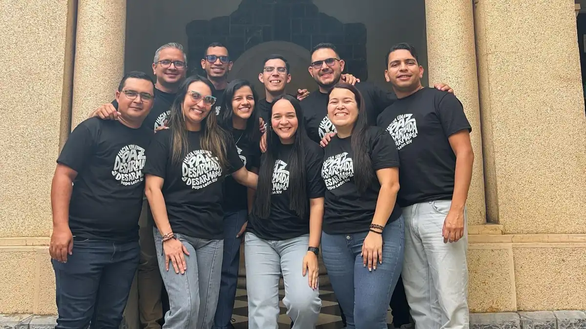

Juventud
Actividades del Área de Juventud
Entre 2022 y 2026 el Área de Juventud celebró jornadas nacionales, asambleas, retiros provinciales y programas de formación con la Pastoral Juvenil de Venezuela.

2026
- 6 al 8 de noviembre: retiro provincial de Pastoral Juvenil en Carúpano, con los secretariados de Margarita, El Tigre, Carúpano y la Arquidiócesis de Cumaná. CEV
- 26 al 28 de septiembre: retiro provincial de Pastoral Juvenil en Valencia, con los secretariados de Maracay, Puerto Cabello, San Carlos y Valencia. CEV, 30-09-2026
- 4 de septiembre: la CEV informa el Censo Nacional de Peregrinos rumbo a la JMJ Seúl 2027. No es la inscripción oficial. CEV, 04-09-2026
- 16 al 18 de junio: I Encuentro Nacional de Asesores, compartido con las áreas de Laicos y Familia. CEV, 19-06-2026
- Marzo a junio: sesiones de Kairós Joven sobre la cultura del encuentro, la salud emocional y el acompañamiento psicoespiritual, con cierre el 22 de junio. CEV, 24-06-2026
- Antes del 2 de marzo: Asamblea Nacional de la Red de Movimientos Juveniles, con 27 movimientos según la nota. CEV, 02-03-2026
- Febrero: 39.ª Asamblea Nacional de Pastoral Juvenil, «Vayan a reparar las redes», con 34 diócesis presentes. CEV, 23-02-2026
- 15 de febrero: celebración central de la Jornada Nacional de la Juventud, con actividades diocesanas del 7 de febrero al 7 de marzo. CEV, 13-02-2026
- Enero: la Coordinación Nacional de Pastoral Juvenil tuvo un espacio de escucha y reflexión (nota de la CEV del 28 de enero). CEV
- 21 de enero: jornada formativa «Liderazgo con rostro de servicio», sobre el liderazgo como servicio según el Documento Final del Sínodo. CEV
2025
- 19 de noviembre y 3 de diciembre: primer bloque de Kairós Joven, por Zoom: «Abrir el corazón» y «Organizar es participar». CEV, encuentro 1 y CEV, encuentro 2
2024
- 23 al 25 de mayo: Congreso Internacional de Pastoral Juvenil, en Roma, con la directora del Centro y la coordinadora del Área de Juventud como representantes de Venezuela. CEV, 24-05-2024
- Febrero: 18.ª Jornada Nacional de la Juventud, convocada el 25 de enero. CEV
2023
- 11 y 12 de febrero: 17.ª Jornada Nacional de la Juventud, con formación, caminata y Eucaristía en más de 25 diócesis. CEV, 16-02-2023
2022
- 21 de marzo al 24 de abril: III Jornada Nacional de Líderes Juveniles, virtual. CEV, 23-03-2022
- 17 al 20 de febrero: 35.ª Asamblea Nacional de Pastoral Juvenil, en Los Teques, para construir el Plan Nacional de Pastoral Juvenil. CEV
- 13 de febrero: 16.ª Jornada Nacional de la Juventud, con semana de animación del 7 al 13. CEV, 07-02-2022